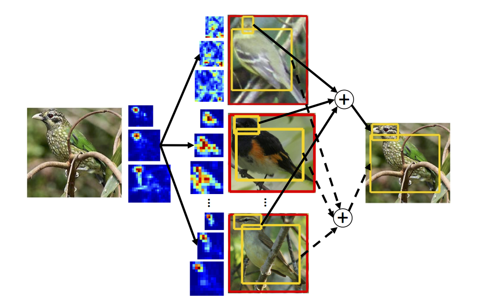

|
I am a senior student in Department of Computer Science at Fudan University, advised by Prof. Yugang Jiang and Prof. Xiangyang Xue. I have spent summers at New York University Shanghai, working with Prof. Zheng Zhang.
Email / Resume / Github / Google Scholar |
|
My research focuses on computer vision and machine learning. In particular, I am interested in fine-grained categorization and leveraging deep learning methods for computer vision tasks. |
 |
We leverage the fact that a subordinate-level object already has other labels in its ontology tree. These free labels can be used to train a series of CNN-based classifiers, avoiding the use of labor-intensive bounding box or part annotations. |
|  |
We propose a nonparametric data-driven method, an iterative transfer strategy that gradually refines the predicted bounding boxes, for object and part localization. |
 |
We learn a weakly supervised semantic segmentation model from social images whose labels are not pixellevel but image-level, furthermore, these labels might be noisy. |